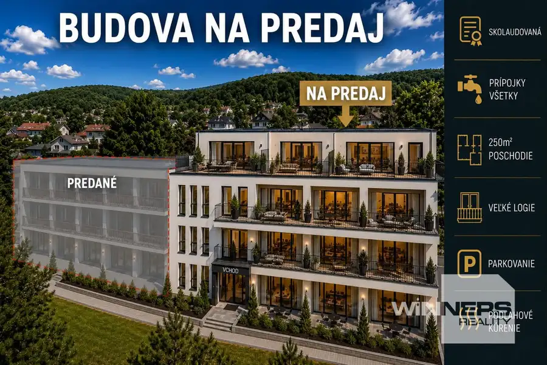

EXKLUZÍVNA INVESTIČNÁ PRÍLEŽITOSŤ: Nehnuteľnosť s vysokým potenciálom na Zemplínskej Šírave
Kaluža

- Plocha750 m²
- StavPôvodný stav
- VlastníctvoOsobné
O nehnuteľnosti
Hľadáte bezpečné zhodnotenie kapitálu v jednej z najvyhľadávanejších rekreačných oblastí na východnom Slovensku? Ponúkame na predaj modernú, polyfunkčnú budovu na Zemplínskej Šírave, ktorá je ideálna na apartmánové bývanie, luxusný penzión, wellness rezidenciu alebo prémiové firemné sídlo.Upozornenie: Susedný trakt budovy je už úspešne PREDANÝ , čo len potvrdzuje obrovský záujem o túto lokalitu!Hlavné benefity a technické parametreStav objektu: Budova je kompletne skolaudovaná Veľkorysá úžitková plocha: Jedno poschodie ponúka až 250 m² flexibilného priestoru.Inžinierske siete: K dispozícii sú všetky prípojky (voda, elektrina, plyn, kanalizácia).Exteriér a výhľady: K apartmánom prislúchajú veľké loggie a priestranné terasy s panoramatickým výhľadom na okolitú prírodu.Parkovanie: Bezproblémové vlastné parkovanie priamo pri objekte pre hostí a majiteľov.Prečo investovať práve tu?Lokalita s vysokým dopytom: Zemplínska Šírava zažíva masívny rozvoj cestovného ruchu. Celoročný dopyt po ubytovaní zabezpečuje stabilný výnos z prenájmu.Univerzálnosť využitia: Objekt je možné rozdeliť na samostatné apartmánové jednotky alebo ho prevádzkovať ako celok (hotel/penzión/klinika/sídlo firmy).Architektúra a dizajn: Moderný, nadčasový vzhľad s veľkoformátovými oknami, ktoré zabezpečujú dostatok svetla a luxusný vizuálny dojem.Kontakt a obhliadkyNezmeškajte príležitosť vlastniť túto prémiovú nehnuteľnosť. Druhá polovica objektu je už predaná, preto neváhajte!Cena: Na vyžiadanie v RK / DohodouTelefón: Katarína Kapraľová Winners Reality 0905 510 550 E-mail: katarina.kapralova@winnersgroup.sk Táto inzercia nie je verejnou ponukou na uzavretie zmluvy. Vlastník si vyhradzuje právo voľby o tom, komu a za akých dojednaných podmienok prevedie svoje vlastnícke právo. Pri tejto ponuke je možné licitovať kúpnu cenu podľa všeobecných podmienok licitácie v sieti Winners reality uverejnených na: www.winnersreality.sk/licitacia.
Parametre
- Druh
- Polyfunkčný objekt
- Dátum zverejnenia
- 25. 06. 2026
- Stav nehnuteľnosti
- Pôvodný stav
- Typ
- Predaj
- Vlastníctvo
- Osobné
- Úžitková plocha
- 750 m²